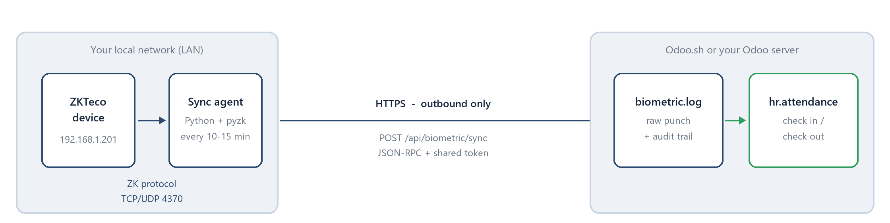
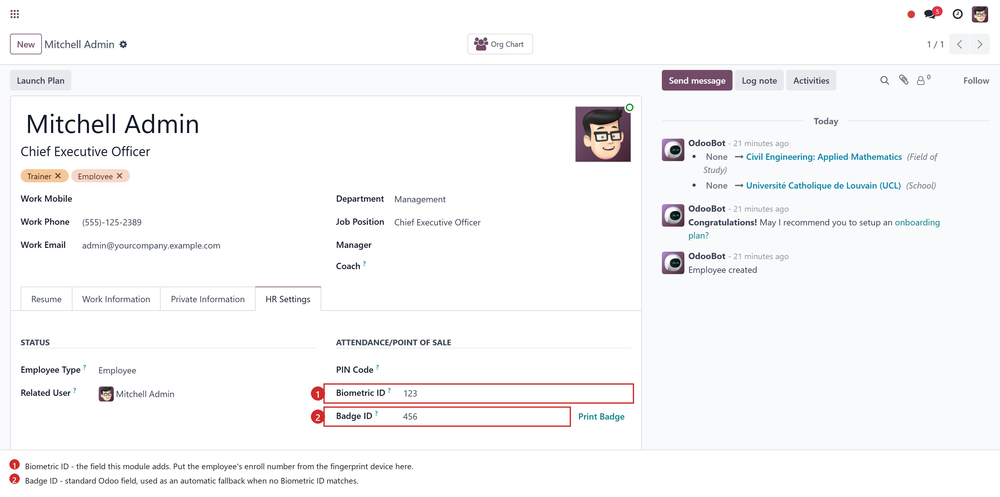
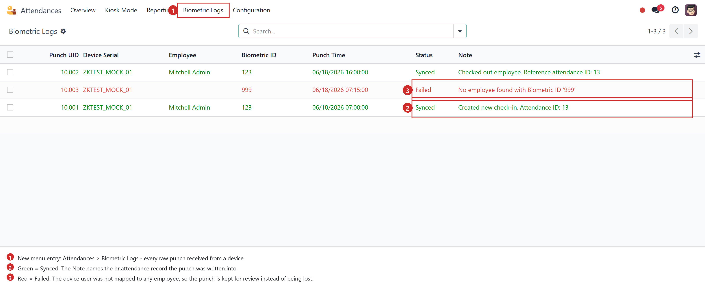
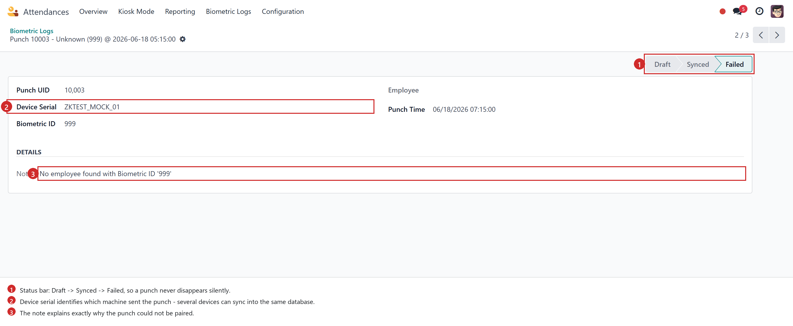
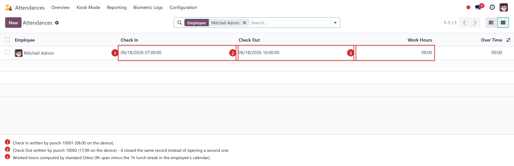

Push attendance punches from ZKTeco fingerprint / face / RFID devices straight into Odoo Attendances — no BioTime server, no middleware, no inbound port forwarding.
Odoo 17 · 18 · 19 Talks to the device SDK directly Works with Odoo.sh & on-premise Token-authenticated endpoint Replay-safe
A small Python agent runs on any PC inside the same network as the fingerprint device. It reads new punches over the native ZKTeco protocol, then pushes them to Odoo over HTTPS. Odoo maps each punch to an employee and pairs it into a normal hr.attendance record.

No BioTime requiredThe agent speaks the native ZKTeco protocol on port 4370. You do not need a BioTime server, its licence, or its database. |
No inbound firewall ruleA cloud Odoo can never reach a private 192.168.x.x address. The agent pushes outward instead, so nothing has to be exposed to the internet. |
Several devices, one databaseEvery punch is stamped with its device serial, and sync progress is tracked per serial. Add branches without extra configuration. |
Go to Settings → Technical → System Parameters and add:
| Key | Value |
|---|---|
| ms_biometric_sync.token | Any long random string. The agent must send exactly the same one. |
| ms_biometric_sync.timezone | The timezone the device clock runs in, e.g. Africa/Cairo (this is also the default). |
Open the employee, go to the HR Settings tab, and fill in Biometric ID with the User ID stored on the fingerprint machine.
On a PC in the same network as the device, install the dependencies and run the agent once so that it writes its configuration file:
pip install pyzk requests python biometric_sync_agent.py
Then edit the generated sync_config.json:
{
"device_ip": "192.168.1.201",
"device_port": 4370,
"odoo_url": "https://yourcompany.odoo.com",
"odoo_token": "the same token you set in Odoo",
"force_udp": false
}
Run the agent every 10–15 minutes with Windows Task Scheduler or a Linux cron entry. Progress is stored in sync_state.json, so each run only uploads punches it has not sent before.

The module adds one field to the employee form. If a punch arrives with an ID that matches no Biometric ID, Odoo falls back to the standard Badge ID, so an existing badge numbering scheme keeps working.

A new Attendances → Biometric Logs menu shows the raw device feed. Rows are colour coded, and the note tells you exactly which attendance record each punch produced.

An unmapped device user does not break the sync and is not dropped. The punch is stored with a Failed status and an explanation, so you can map the employee and review it afterwards.

Two punches became one hr.attendance record. From here on everything is standard Odoo — worked hours, overtime, reporting and payroll all behave exactly as usual.
For every punch, in order:
| Route | POST /api/biometric/sync |
|---|---|
| Type | JSON-RPC (type="json"), auth="public", CSRF disabled |
| Authentication | Shared token in params.token, compared against ir.config_parameter |
{
"jsonrpc": "2.0",
"method": "call",
"params": {
"token": "your-token",
"logs": [
{
"punch_id": 10001,
"device_serial": "ZKTEST_MOCK_01",
"biometric_id": "123",
"punch_time": "2026-06-18 08:00:00"
}
]
}
}
{
"result": {
"status": "success",
"processed": 2, // punches written into hr.attendance
"ignored": 0, // already synced before
"errors": 1, // stored as Failed logs, with the reason
"error_details": []
}
}
| Model / field | Purpose |
|---|---|
| biometric.log | One record per punch received: employee, biometric ID, punch UID, device serial, punch time, status and note. |
| hr.employee.biometric_id | The employee's enroll number on the device. Unique across employees. |
| Unique constraint | (device_serial, punch_id) — the database-level guarantee against duplicates. |
A mock tester, mock_test_sync.py, is provided next to the sync agent. It posts three fabricated punches (a check-in, a check-out, and one for an unmapped user) to the endpoint, so you can validate the token, the employee mapping and the pairing logic before any hardware is on site.
$ python mock_test_sync.py
Sending request to: http://localhost:8069/api/biometric/sync
HTTP Status Code: 200
{
"result": {
"status": "success",
"processed": 2,
"ignored": 0,
"errors": 1
}
}
An automated suite covers the same ground: token rejection, timezone conversion, punch pairing, replay protection, unmapped users and the badge-ID fallback.
python -m odoo -d yourdb -i ms_biometric_sync \
--test-enable --test-tags=/ms_biometric_sync --stop-after-init